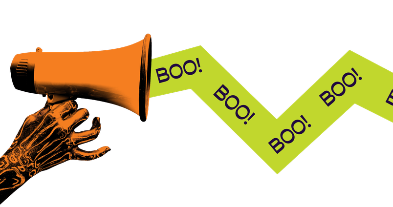
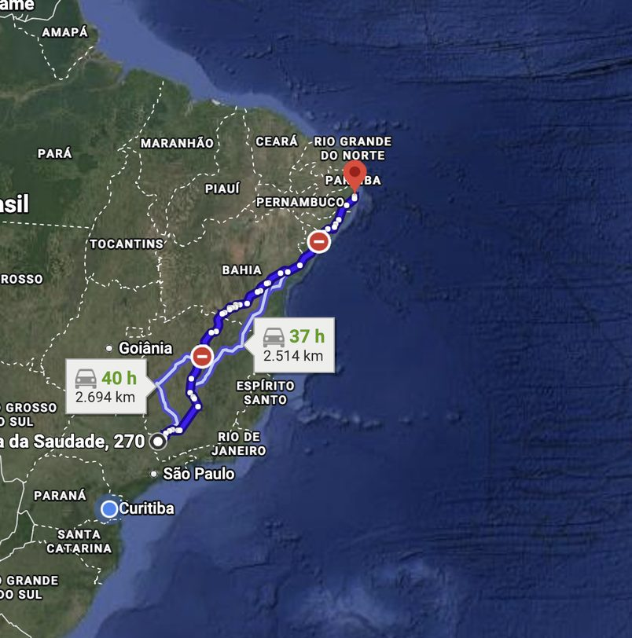
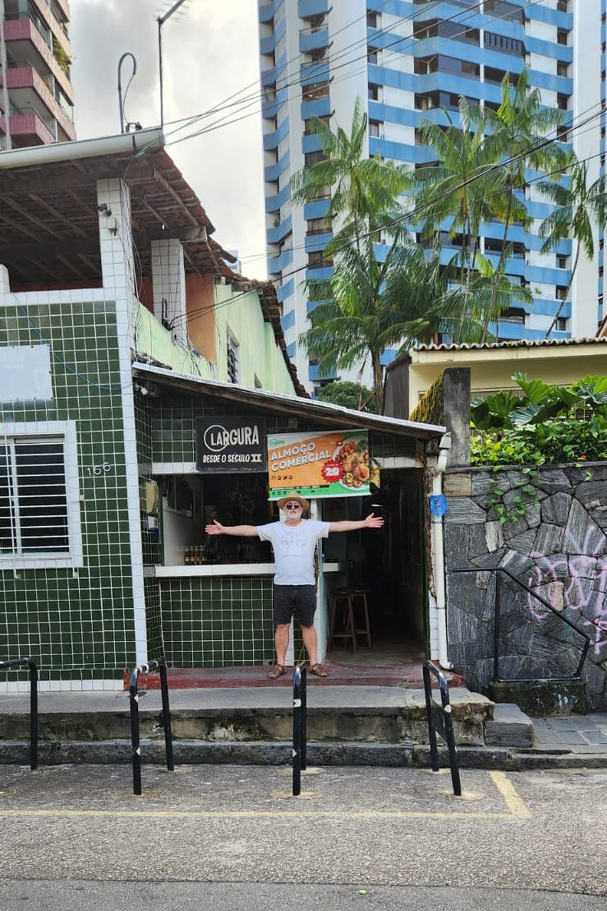
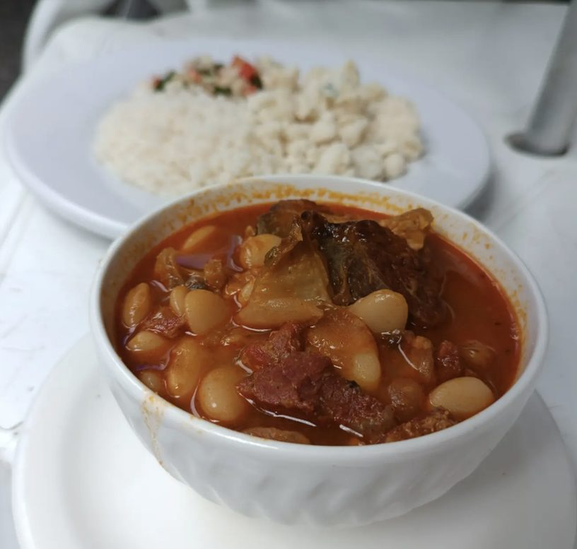

A limitação do seu
ponto pode virar
SUA MELHOR MARCA
De vizinho de cemitério a corredor espremido: aprenda a usar o inusitado para atrair clientes, criar narrativa e vender mais
#75 out . 26
Por: Mara Andrich

Depois do velório
Há também quem chegue por um motivo nada festivo. "Muitos dos nossos clientes acabaram de passar por um velório. Então, fazer com que eles se sintam à vontade e descontraídos é nossa aposta e diferencial", diz Frym.
Parte desse acolhimento passa pela mesa. Em 2026, o Vulcãozinho do Finado Cumpadi João foi vice-campeão do Comida di Buteco. São minissanduíches de ragu de paleta com queijo gratinado e rúcula, servidos a R$ 40, no prato em formato de caixão.

A quase 2 mil quilômetros dali…

O Largura Restaurante
Em Recife (PE), outro bar teria motivos para afastar a clientela, desta vez por causa do próprio imóvel.
O Largura Restaurante opera em uma casa espremida, de porta e janela pra rua. Os clientes se acomodam em um corredor estreito, com banquetas altas, enquanto outros passam por trás, de lado, para chegar ao fundo. O nome, para quem chega sem conhecer a história, parece provocação.
O endereço é o mesmo desde 1989, embora a placa na entrada prefira uma data mais vaga: "desde o século XX". O imóvel pertence à família, e por isso o bar nunca mudou de lugar nem fechou as portas em 37 anos. Com algumas reformas, ganhou espaço nos fundos e hoje recebe de 80 a 100 clientes por dia. O proprietário, Wilson Sebastião, ainda pretende fazer alguns reparos, mas julga a estrutura suficiente. "Os clientes consideram aconchegante", garante.
A narrativa é a própria história
O Largura do nome é o próprio Wilson. Antes de abrir o negócio, aos 21 anos, ele trabalhava como garçom e passava parte dos dias na mesa de sinuca, onde tinha o hábito de cantar a caçapa em que a bola ia cair. A bola caía em outra, e os amigos passaram a chamá-lo de Largura, por causa da distância entre a previsão e a jogada. Quando o bar abriu, o apelido combinou com o corredor estreito, e Wilson resolveu apostar na confusão. Tem cliente que chega esperando um salão amplo. “Tem cliente que espera encontrar um dono bem gordo”.
Quem já conhece não se engana mais, e quase todo mundo ali já conhece. Segundo Wilson, 90% da clientela é de rostos familiares, "uma espécie de confraria". Nas paredes, fotos de frequentadores, alguns deles nomes conhecidos da cultura brasileira. Wilson diz que os clientes veem o bar como "a última resistência de Casa Forte", o bairro onde ele funciona.
Na cozinha, pratos regionais pernambucanos, com destaque para a carne de sol acebolada com farofa de jerimum caboclo e a galinha de cabidela. O bar abre todos os dias a partir das 11h. À noite, funciona só às quartas, quintas e sextas, até as 22h.

O que isso nos ensina sobre negócios?
Apesar de propostas bem diferentes, o Bar de Frente Pro Futuro e o Largura Restaurante compartilham a mesma inteligência de mercado: eles pararam de brigar com as limitações do seu espaço e as transformaram no principal ativo do negócio.
Em vez de tentar esconder o ponto inusitado ou a metragem reduzida, os dois empreendedores usaram a própria realidade para construir uma marca autêntica, memorável e impossível de ignorar.
Para quem vive do comércio, o sucesso desses dois endereços entrega três lições valiosas de gestão:
-
1
Transforme a limitação na sua marca
Nem todo comerciante conta com a fachada perfeita ou o salão dos sonhos. A saída do bom gestor é encontrar a singularidade do seu ponto e usá-la a favor do conceito. Nomes provocativos, cardápios temáticos e uma boa dose de humor transformam o que seria uma desvantagem em curiosidade, conversa e divulgação espontânea nas redes sociais. Um ponto muito importante: essas narrativas não foram inventadas. Elas foram encontradas. Nenhum dos dois precisou criar um “conceito” artificial para parecer singular.
-
2
A curiosidade atrai, mas é a qualidade que retém
A atração pelo inusitado faz o cliente cruzar a porta pela primeira vez, mas é o produto que garante o faturamento do mês seguinte. Tanto o prato premiado servido no caixão em Poços de Caldas quanto os pratos regionais de peso em Recife provam que o conceito divertido só dura no mercado se vier acompanhado de excelência na cozinha, atendimento atencioso e cerveja trincando.
-
3
Bar é lugar de pertencimento e acolhimento
Seja oferecendo um ambiente leve de descompressão para quem acabou de sair de um velório ou criando um clima de "confraria" com os frequentadores do bairro, um estabelecimento prospera quando entende o momento do seu público. No fim das contas, o cliente busca um lugar onde se sinta bem acolhido.
Um bar confortável, espaçoso e bem localizado pode ser excelente — e completamente esquecível. “O bar em frente ao cemitério” e “o restaurante chamado Largura que é estreitíssimo” são descrições que cabem numa frase e permanecem na cabeça.
É essa pequena fricção que provoca a pergunta “como assim?”. E curiosidade é uma porta de entrada para experimentar um lugar.